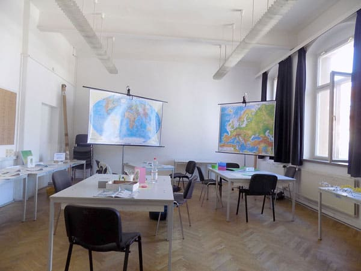
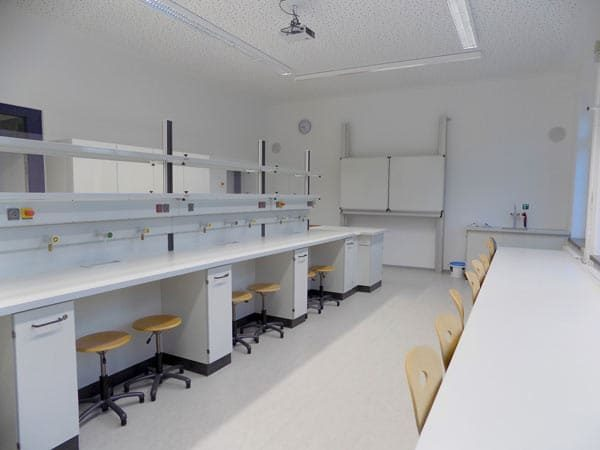

Chemie
Im Kabinett wird geforscht
Sicherheitsbrille auf, Brenner an: In Chemie zählt, was man selbst probiert hat.
Wir haben einen normalen Tag mitgeschrieben – von Montag bis Freitag, von der ersten S-Bahn bis zum letzten Gong. Kein Marketing, keine Werbesprache: nur unser Alltag an der Jordanstraße.
Unser Unterricht ist nicht jeden Tag gleich – und das ist gut so. Am Montag starten wir entspannt später, Freitag endet die Schule früher. Dazwischen läuft der normale Ganztagsbetrieb:
Montag beginnt der Unterricht erst um 10:00 Uhr – wer von weiter weg kommt, hat Zeit, und niemand startet die Woche mit Stress.
Drei lange Tage: Unterricht ab 8:00 Uhr, Mittagessen mit der Klasse, Förderunterricht, AGs und Hausaufgabenzeit – bis 15:30 Uhr.
Am Freitag ist um 14:45 Uhr Schluss – rechtzeitig fürs Wochenende, die Schulband oder den Sportverein.
Wer um acht hier ist, kommt mit dem Rad oder der Straßenbahn durch die Äußere Neustadt. Vor dem Gründerzeitbau – früher eine Mädchenschule, seit 2016 unsere Schule – sammeln sich die ersten Klassen. Wer zu früh da ist, geht noch eine Runde über den Hof oder hört schon mal der Band zu, die manchmal vor dem ersten Unterricht probt.



Mathematik, Deutsch, Englisch – die klassischen Fächer laufen am Vormittag. Unsere Klassen sind klein: maximal 24 Schüler, in Kleingruppen wie Sprachen oder Förderunterricht höchstens 12. Das merkt man sofort: Niemand sitzt hinten rechts und wird übersehen. Wer bei LRS, Dyskalkulie oder AD(H)S Unterstützung braucht, bekommt Förderunterricht, der wirklich fördert statt nur extra Hausaufgaben zu machen.
In den Fachkabinetten – Physik, Chemie, Biologie – wird ab der ersten Stunde angefasst, was man sonst nur im Buch sieht. Die digitale Tafel und die schulischen Notebooks sind Teil des normalen Unterrichts, kein Special.
Sicherheitsbrille auf, Brenner an: In Chemie zählt, was man selbst probiert hat.

MINT heißt bei uns nicht nur Theorie – die Physik-Kabinett-Stunden sind die beliebtesten des Tages.
Wer in einer 20er-Klasse sitzt, kann sich nicht verstecken. Manche finden das anstrengend – die meisten mögen es.
Auf dem Hof ist jetzt alles los: Fußball, Quatschen, Sonnen. Die Äußere Neustadt liegt direkt vor der Tür – manche holen sich in der großen Pause einen Döner oder gehen in den Park. Wer will, kann aber genauso gut im Gebäude bleiben: Bibliothek, Musikraum, Kabinette.


Nach dem Mittagessen (alle zusammen, mit der Klasse) teilt sich der Tag: Die einen haben Förderunterricht oder Arbeitsgemeinschaften – Robotik, Theater, Band, Sport, Kunst. Die anderen machen Hausaufgaben in der Lernzeit, damit zu Hause Feierabend ist. Wer in Klasse 9 oder 10 ist, plant zusätzlich Praktika, Werkstatttage oder die Potenzialanalyse für die Berufswahl.
Um 15:30 Uhr (freitags schon um 14:45 Uhr) macht die Schule dann langsam zu. Manche bleiben trotzdem noch – für die Bandprobe oder einfach, weil es hier gemütlich ist.

Die Robotik-AG baut, schraubt und nimmt an Wettbewerben teil.

Zweimal pro Woche wird geprobt – am Ende steht eine Aufführung in der Aula.

Die Schulband spielt bei Festen, beim Weihnachtssingen und einfach so.
Termine, die unser Schuljahr strukturieren. Genaue Daten stehen, sobald sie feststehen, auf der offiziellen Schul-Seite.
Die ganze Schule singt, die Band spielt, die Aula riecht nach Plätzchen. Termin folgt.
Drei Tage Schnee mit der ganzen Klasse: Ski, Rodeln, Abendspuk in der Jugendherberge.
Zukunftsfünftklässler begleiten einen Tag lang eine echte Klasse. Anmeldung über die offizielle Schul-Seite.
Eine Woche lang normaler Stundenplan? Nein – stattdessen Projekte, Workshops und Diskussionen.
Band-Auftritte, Kuchenstand, offene Klassenzimmer. Auch Sie sind eingeladen!
Alle offiziellen Termine gibt es bei der Schule: semper-schulen.de ↗
„Ich dachte, eine private Schule ist wie eine Firmen-Zentrale. Aber hier wird gelacht, gesungen, geschraubt – und manchmal einfach nur die Sonne genossen."– Tim, 8. Klasse
Beim Tag der offenen Tür (voraussichtlich November 2027) führen wir persönlich durchs Haus. Alle verbindlichen Infos zu Anmeldung, Voraussetzungen und Schulgeld gibt es bei der Schule direkt.